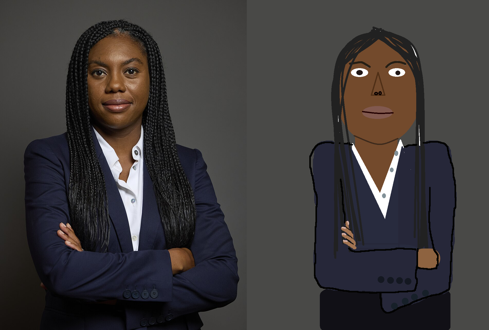

Kemi Badenoch

Kemi Badenoch started the fightback. Left a mess by the previous Tory Leader, Rishi Sunak, Kemi was the only one who had the drive and the vision to turn the Tory fortunes around. God Bless and God Speed!
I am lucky to have lived the majority of my life under the firm but fair rule of the Conservative and Unionist Party. Their well thought out and rational fiscal and foreign policy has led to astounding growth, quality of life and respect on the foreign stage. Like most of you, I was distraught when Pier (because he's wooden, like a pier) Starmer manage to hoodwink enough people of this great nation to weasel his way into 10 Downing Street. To show how highly regarded our Tory patriots are by the British public, I have engaged in a long term art programme - personalised portraits of every great statesman and woman working to advance the great Conservative agenda in Westminster. Luckily, this is an easier job than it would be in years gone past. There are vanishingly few Tory MPs at the moment, and while this state of affairs will no doubt come to an end soon, it gives me the opportunity to achieve my goal! I will be adding portraits of all Tory MPs over the coming months, starting with the shadow cabinet before moving to alphabetical order. Each day, a different patriot's portrait (or portriat) will be randomly showcased alongside a short biography and highlight reel. I hope you enjoy, and please share these portriats with their models in the future!

Kemi Badenoch started the fightback. Left a mess by the previous Tory Leader, Rishi Sunak, Kemi was the only one who had the drive and the vision to turn the Tory fortunes around. God Bless and God Speed!